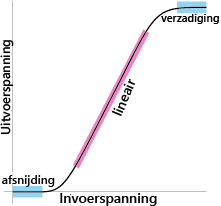

Het Analoge Domein: Transistors
De transistor is de fundamentele bouwsteen van elektronische circuits, waarin ze gebruikt worden als aan/uit-schakelaars.

Afbeelding van sv.Wikipedia-gebruiker DaRy
Je hebt geleerd dat een draad wel of geen spanning kan dragen. De realiteit is ingewikkelder. Het beeld dat een draad, transistor of logische poortuit aan of uit kan is een vereenvoudiging: een abstractie.
Dit is een ruwe grafiek van het werkelijke invoer-uitvoergedrag van een transistor. Maak je geen zorgen over de details; let op de twee blauwe platte delen van de grafiek. Binnen het "afsnijding"-gebied passen kleine veranderingen in de ingangsspanning de uitgangsspanning niet aan; de uitgang is altijd nul volt. Evenzo binnen het "verzadiging"-gebied beïnvloeden kleine ingangsveranderingen nauwelijks uitgangsspanning; de uitvoer wordt geïnterpreteerd als 1 . Dit is hoe transistors worden gebruikt als schakelaars in een computer.
Transistors zijn veelzijdige apparaten. Bij gebruik in het middelste, lineaire (roze) deel van de grafiek, werken ze als versterkers ; een kleine variatie in ingangsspanning produceert een grote variatie in uitgangsspanning.
De vlakheid van de output aan de twee uitersten is belangrijk omdat er kleine veranderingen in de input zullen zijn. Elektrische schakelingen hebben "ruis", ongewenste veranderingen in spanningen, vanwege vele reden van transistors die heet worden tot losse verbindingen op de printplaat en zelfs kosmische straling. Dit is de reden waarom computers nullen en enen gebruiken: een transistor heeft twee vlakke gebieden in zijn input-outputcurve.
Maar de vlakheid van het verzadigde gebied is slechts een benadering en het hangt af van hoe de transistor is verbonden met de rest van het circuit. Een voorbeeld van een potentieel probleem is fanout , het aantal transistoringangen waarop de uitgang van een transistor is aangesloten. Voorbij een bepaald aantal (het hangt af van het specifieke transistortype, maar tien ingangen zouden zeker te veel zijn), wordt de uitgangsspanning zo ver verlaagd dat de ingangen niet zeker zijn of ze een 0 of een 1 krijgen.
De manier waarop een transistor echt werkt, hangt af van kwantumfysica. (We hebben het niet over kwantumcomputers; gewone oude computercircuits zijn ook gebaseerd op kwantumeffecten.) Volg een cursus Elektrotechniek om meer te leren over het ontwerpen van analoge domeinen en wat zich in een transistor bevindt.